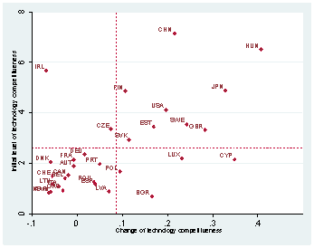

Paper Title :
An Overview of the Dynamic Competitiveness of Countries
Abstract
The term “international competitiveness” has been
associated over time with different definitions andsenses, being
at the moment one of the most controversial topics in the field
of international economics. The lack of competitiveness of many
European countries vis-à-vis the competitive ones is no longer
due to the fact that their wages are substantially lower or that
labor productivity has not increased. The problem is that they
are stuck at middle levels of technology. We followthe
assumption that the technological gap between a frontier and a
latecomer country represents an important path of
development for the latter. The approach in this paper is to
assess countries’ economic development throughout the
relationship between GDP growth on one hand, and the GDP
gap, technological competitiveness, capacity competitiveness,
price competitiveness and investment competitiveness on the
other hand. We introduced 33 countries (EU27, China, Japan,
Canada, Norway, Switzerland and USA) observed during 12
years, from 2000 until 2011. To increase the efficiency of our
econometric work, we chose to use panel data by taking
advantage of all the information about the inter-temporal
dynamics and individuals. The regression was estimated using a
Random Effects Model and a Random-Effects Linear Model
with AR (1) disturbance (GLS estimation). In both cases, the
outcomes proved to be significant, with the expected signs and
statistically significant coefficients.
Author:
Popa Angela Cristina
Department of International Economic Relations
Academy of Economic Studies of Bucharest, ASE
Bucharest, Romania
Paper Transcript of Paper Titled :
An Overview of the Dynamic Competitiveness of Countries
An Overview of the Dynamic Competitiveness of Countries
Popa Angela Cristina
Department of International Economic Relations
Academy of Economic Studies of Bucharest, ASE
Bucharest, Romania
Abstract— The term “international competitiveness” has been associated over time with different definitions and senses, being at the moment one of the most controversial topics in the field of international economics. The lack of competitiveness of many European countries vis-à-vis the competitive ones is no longer due to the fact that their wages are substantially lower or that labor productivity has not increased. The problem is that they are stuck at middle levels of technology. We follow the assumption that the technological gap between a frontier and a latecomer country represents an important path of development for the latter. The approach in this paper is to assess countries’ economic development throughout the relationship between GDP growth on one hand, and the GDP gap, technological competitiveness, capacity competitiveness, price competitiveness and investment competitiveness on the other hand. We introduced 33 countries (EU27, China, Japan, Canada, Norway, Switzerland and USA) observed during 12 years, from 2000 until 2011. To increase the efficiency of our econometric work, we chose to use panel data by taking advantage of all the information about the inter-temporal dynamics and individuals. The regression was estimated using a Random Effects Model and a Random-Effects Linear Model with AR (1) disturbance (GLS estimation). In both cases, the outcomes proved to be significant, with the expected signs and statistically significant coefficients.
Keywords- International competitiveness, Technology Index, economic growth, Random Effects Model
Introduction
The term “international competitiveness” has been associated over time with different definitions and senses, being at the moment one of the most controversial topics. The lack of a commonly accepted definition is by far the most important source of opposition to the concept of macro-economic competitiveness or international competitiveness.
In an increasingly globalizing world, most countries are integrated into the world economy, voluntarily or by force. International competitiveness has to be in this context both reflected by internal and external performances. There are a variety of definitions of competiveness that lead to different indicators, each with its own particular application. Moreover, for any single concept of competitiveness, several measures may be constructed, depending on further specific assumptions. No single measure, or limited set of measures, can provide all the information required to asses and manage an economy.
These measures range from indicators of economic performance, single-factor indicators, to composite indexes reflecting economic, structural and institutional factors.
The problem of competitiveness is extremely important in the context of European Union integration, as future member states must integrate into a competitive economic area. In this context, science, technology and innovation are acknowledged to be important drivers for the Europe 2020 growth strategy. On 17 July 2012, the Commission adopted its Communication on “A Reinforced European Research Area (ERA) Partnership for Excellence and Growth”. ERA is designed to be a unified research area open to the world and based on the internal market, in which researchers, scientific knowledge and technology circulate freely. Having emphasized the role played by innovation and technology in the EU context, what is deeply important is not the absolute performance, however we define it, but how well a country performs relative to others.
In this paper, follow the work of Fagerberg, we depart from the “perfect competition” approach and consider technology as a public good. We develop a model considering three sets of factors that determine the rate of growth of a country: the potential to exploit knowledge developed elsewhere, the new knowledge developed within the country and the capacity to exploit (absorb) knowledge (independently of where it is created) - the model opens up for international technology but abstracts from flows of goods and services. Unlike Fagerberg, we chose to use panel data by using all the information about the inter-temporal dynamics and individuals.
The approach in this paper is to assess countries’ economic development throughout the relationship between GDP growth on one hand, and the GDP gap, technological competitiveness, capacity competitiveness, price competitiveness and investment competitiveness on the other hand. We follow the assumption that the technological gap between a frontier and a latecomer country represents an important path of development for the latter. Technology and capacity competitiveness are composite indicators based on reliable data sets which were estimated using a confirmatory factor analysis. Although each and every case is influenced by specific factors, we will take these into account and integrate them into the model, as our main purpose is to identify measure and test the impact of some factors on the economic performance of countries. We developed our model using a static panel data regression, noting the individual behavior of countries in a repetitive environment. Matter of fact, what we are trying to emphasize in this paper are the effects of different dimensions of competitiveness on the economic performances of countries. The regression was estimated using a Random Effects Model and an autoregressive AR (1) model (GLS estimation). In both cases, the outcomes proved to be significant, with the expected signs and statistically significant coefficients.
The plan of the paper is as follows: the following section reviews the empirical literature in the field of competitiveness, paying particular attention to technology competitiveness and capacity to absorb such technology, as two central factors that boost economic growth; section 3 presents the construction of the two composite indicators developed in this study and describes the variables used in the model; section 4 presents the methodology chosen for our panel data and section 5 reports the data and main findings. The outcomes are highlighted in the last section of the paper.
RELATED LITERATURE
Although it is widely accepted that is difficult to define, measure and explain the concept of competitiveness, there are some relevant attempts in the literature to define and measure international competitiveness. One of the most important sources I consider to be the work of Jan Fagerberg, who has developed over time several models of competitiveness. In his papers he deals with concepts like technology competitiveness, innovation, economic development and he emphasizes that the difference in countries’ development levels are no longer explained by a single factor. According to new growth theory [3], the knowledge acumulation within national borders is the main factor which influences economic development. In recent years it was acknowledged especially among the economists from the filed of international economics the importance of technological competition. This was also emphasized many years ago by Joseph Schumpeter [22] who stated that price or cost competitiveness are left behind by other measures of competitiveness, like new comodity, new technology, new sources of supply and new type of organization. As Fagerberg described in one of his articles called ”International Competitiveness” [13] even if a country is very competitive in terms of technology and prices, it is not always able to meet the demand for it’s products because of a capacity constraint. A logical conclusion from this would be that the lack of technology and price competitiveness may be compensated by a high ability to meet demand, if some other country faces a capacity constraint. The concept of such capacity has a long history in the literature, authors often refferd to as „social capability” [1], „absorbtive capacity” [8], „innovative capacity” [20]. As some authors already emphasized, competences and quality of the human resources, the specialization in the high-technology sector, together with the development of the financial system seems to be important structural factors which are able to stabilize economic development [4]. In recent works, some authors extended the importance of technological development to the agriculture sector, highlighting that some of the less developed countries are still highly dependent on the agriculture sector, which has significant opportunities of technological and rent upgrading [9].
These concepts were also used to explain differences in cross-country growth performances. [11] and [17]also found support for the proposition that R&D and innovation are important for catching-up (and economic growth more generally). Economic growth is often explained by factors that are measurable, but there is still a proportion of economic growth that cannot be explained by measurable factors. Some of these factors are related to the various aspects and quality of governance, as some studies already emphasized [21]. As some researchers already highlighted, the specialization of countries in technology-intensive products has been shown to be conductive to growth. Differences in geography and nature are still important for economic growth, as some empirical studies already exploited the relationship between growth and development [6]. Along with these factors, we acknowledge that social characteristic of countries are also important for its development [2], but we decided to consider them as exogenous in our study. Until recently, there was a lack of reliable indicators that could be used to put numbers on the so-called many dimensions of competitiveness, emphasized by the theoretical literature. But in recent years, the availability and quality of different aspects of development improved significantly, and this gives researchers new opportunities to investigate the differences in economic performance among countries, even by integrating large amounts of information into easily understandable formats, like for example, composite indicators [14]. Moreover, science, technology and innovation statistics have been acknowledged in 2010 by the Commission to be closely linked to the policy activities carried out by the European Union. In this context, these indicators are key elements that serve at monitoring the objectives of the Innovation Union initiative and European Research Area (ERA), under the different priorities of the Europe 2020 Strategy.
CONSTRUCTING COMPOSITE INDICATORS
The main purpose of our discussion is to identify measure and test the impact of the four factors that we consider being of high interest in the context of different performances of countries. We decided to use composite indices due to their ability to integrate large amounts of information for a particular subject of interest. They can be also measured over time and have the ability to point out the direction of change. Dealing with the fact that there is a lot of diversity in how countries perform, in this section we develop indicators of four different aspects of competitiveness. We consider these factors being the technology competitiveness, capacity competitiveness, price competitiveness and investment competitiveness. For the first two factors, our approach is to find reliable indicators and weight them together. To construct indexes of technological and capacity competitiveness, based on different indicators, it was necessary to normalize the levels of different activities according to the size of the country. Although there are a variety of aggregation rules for a composite indicator in the related literature (e.g. Diewert, 1976, Journal of Economic and Social Measurement, 2002), in practice a composite indicator, I, can be considered a weighted linear aggregation rule applied to a set of variables (OECD, 2003, p. 5):
I=Σ wi xi, i = 1,2,..., N
Where xi is a scale adjusted variable normalized between zero and one, and wi a weight attached to xi with Σ wi, i = 1,2,..., N and and 0≤, wi≤1, i = 1,2,..., N.
Although it was better to have a-priori knowledge about the “weights” to use in the construction of the composites, we applied a confirmatory factor analysis to test the robustness of the indices and gave each variable an equal [4]. Table III shows the results of the factor analysis for technology and capacity competitiveness. In both cases, there is only one factor with a value greater than unity, supporting our belief that the indicators taken into account do in fact reflect the same dimension.
Technology competitiveness
Technology is a key factor for the economic progress. From new inventions like software, robotics and biotechnology, to improvements in manufacturing systems and processes, technology makes economies and societies more efficient and productive. Technology also helps countries to compete more successfully in markets for new goods and services. Technological competitiveness becomes this way closely related to innovativeness of a country. Although there are several indicators that measure directly the innovativeness of a country, the data for some countries are still lacking. Thus, we decided to use different aspects of the phenomenon, like R&D expenditures that measures some of the resources that go into developing new goods and services. Another reliable indicator found in the literature being highly related to technology competitiveness is the number of patents of a country. Although these two proxies can be useful tools for understanding innovation, they are necessarily imperfect measures, because the propensity to patent varies considerably across industries, with many innovations not patented (or even patentable). Therefore, we chose to consider the articles published in scientific and technical journals indicator, as a measure of the quality of science base. It is widely acknowledged that a well-developed infrastructure is considered to be of high importance for innovation, so we introduced in the composite indicator the share of information and communication technology goods in total exports. We could have chosen instead the high-technology exports, but since high-technology exports are products with already incorporated R&D expenditures, we kept only the R&D expenditures in the composite. Unlike Fargerberg, we didn’t take into consideration the telephone mainlines per head of population, considering it to be exceeded by the present technological context. In almost all developed countries the telephone mainlines were cut off and they were replaced by the mobile phones. Ideally, we would have loved to include data on the diffusion of new, high-technology goods, like smart-phones or gadgets diffusion throughout the population, but unfortunately such data are not available, at least at the moment.
The technology competitiveness equation is as follows:
Itech=(25*patent+25*art+25*rd+25*ict)/100 (1)

Figure 1. Technology competitiveness (2000-2011)
Figure footnote: Dashed horizontal and vertical lines indicate sample averages. Source: Own computation based on various sources (See Overview of the dataset).
Capacity competitiveness
For a better absorption of technology, a country must have a good capacity for exploiting it. Even if in theory the distinction between technology competitiveness and capacity competitiveness can be clear enough, it is not the same thing in practice, since resources that are devoted to developing new goods and services may also be beneficial for the ability to exploit such innovations economically and vice versa [8]. In our approach the economic capacity of a country should be related to individual differences of countries in the ability to absorb and transform resources into valuable activities. These individual differences, according to Abramovitz [1] are related to three relevant general factors: technical/organizational competence (level of education), availability/quality of financial institutions/markets, and quality/efficiency of governance. Thus, for the capacity competitiveness, we decided to concentrate on the capabilities that are important for the capacity to exploit technological opportunities. Although for each of these factors we found reliable indicators, we can say that all of them can be measured albeit imperfectly. However, by taking into account a broad range of variables, some of the problems associated with a particular data source/indicator may be “averaged out”. For the first factor, we included secondary school enrollment which emphasizes secondary education. Regarding the development of the financial system, we took into account the monetary stability represented by historical record of inflation rates. Even if we could have chosen several quality/efficiency governance indicators, it is quite impossible to measure them with precision, especially in time series. This is because opinion polls and expert assessments might be influenced by factors other than those we are interested in (e.g. general mood of “optimism” among the respondents at the time or the reverse [10]. Although we acknowledge these facts, we chose to include in the last factor the Physical Rights Index and Women Political and Economic Rights Index.
The capacity competitiveness is as follows:
Icap=(20*monstab+20*schoolsecondary+20*phys+20*emp+20*grosssavings)/100 (2)

Figure 2. Capacity competitiveness (2000-2011)
Figure footnote: Dashed horizontal and vertical lines indicate sample averages. Source: Own computation based on various sources (See Overview of the dataset).
Price competitiveness
The general issue concerns the choice of price or cost measure used. Price and or/cost competitiveness reflects the traditional view on competitiveness, which emphasizes the potentially damaging effects of excessive wage growth on the economy. In the literature, there are three sorts of measures in common use, mostly for industrial countries: those based on unit labor costs in manufacturing industry; those based on consumer prices; and those based on export unit values. Recent efforts are trying to broaden the scope of competitiveness measures, paying more attention to non-manufacturing. The non-manufacturing outputs are increasingly traded, and services inputs are frequently considered key components of traded goods (even if these inputs are themselves not directly traded). For this indicator we choose to use the growth of real unit labor cost. As Fargerberg [19] already emphasized, there is no clear trend between the economic growth and the ULC. Countries with a high ULC can be among the leaders and in the same time can be among the laggards.
Figure 3. Price competitiveness (2000-2011)
Figure footnote: Dashed horizontal and vertical lines indicate sample averages. Source: Own computation based on various sources (See Overview of the dataset).
Investment competitiveness
Private capital flows are still representing a significant source of investment for all countries, especially for developing ones, indicating the degree to which a country have become integrated into the global economy and thus how exposed it is to any financial shock. “FDI triggers technology spillovers, assists human capital formation, contributes to international trade integration, helps create a more competitive business environment and enhances enterprise development. These aspects contribute to higher economic growth, “which is the most potent tool for poverty alleviation” [23]. Compared to Portfolio Investment (PI) it is assumed to be more stable, less prone to volatility and bringing significant development benefits to the country, but recent evidence questions the idea of FDI’s supposed stability. The consequences of such volatility for growth are obvious, especially in countries highly reliant on such flows for investment. When investment sources are unpredictable and volatile, so is growth. For instance, sudden and large inflows of private capital have been “associated with inflationary pressures, a real exchange-rate appreciation, a deterioration of the current account and a boom in bank lending” [7]. Although is evident which are in this context the macro-economic effects of such volatility on the poor households, we still have reasons to believe that this factor is important for increasing domestic consumption or investment.
Figure 4. Investment competitiveness (2000-2011)
Figure footnote: Dashed horizontal and vertical lines indicate sample averages. Source: Own computation based on various sources (See Overview of the dataset).
METHODOLOGY
Having developed indicators of different aspects of competitiveness, we apply these indicators in an Random Effects Model. To increase the efficiency of our econometric work, we chose to use panel data by using all the information about the inter-temporal dynamics of individuals. Panel data provide information on individual behavior both across time and across individuals. However, for valid statistical inference we need to control for likely correlation of regression model errors over time for a given individual. The usual formula for OLS standard errors in a pooled OLS regression typically overstates the precision gains, leading to underestimated standard errors and a t-statistics that can be greatly inflated.
Although we had a lack of annual observations for some key variables, the missing observations were estimated with the help of other indicators with full coverage in the dataset using the impute procedure in Stata 12. (The number of observations estimated by the procedure is given in the last column of the Table II.).
In our model we consider that economic growth should be influenced by five different factors: the potential for diffusion, growth in technological competitiveness, growth in capacity competitiveness, growth in price competitiveness and investment competitiveness. The goal of this estimation is to assess the impact of the different aspects of competitiveness on economic growth. As for the total level of technology appropriated in a country (independent of origin) relative to the frontier (the country considered the most advanced in the sample), we had to find a proxy. As in other empirical studies in the literature, we decided to identify the level of technology with the GDP per capita. Therefore, to calculate the potential for diffusion we used the log of initial level of GDP per capita. The effect of this variable should be negative, dragging down growth in frontier countries and giving a boost to those further behind.
The econometric form of the model will be:
Δgdp_growthit=β1Y_gapit+ β2Δtechit+ β3Δcapit+ β4Δulcit+ β5cfit +α+ui+εit (3)
i=1,……,33; t=1,….,12 (time)
Where:
Δgdp_growthit = GDP growth of country i in time t
Y_gapit = Log of the GDP per capita of country i in time t
Δtechit = Growth of Technology Competitiveness Indicator of country i in time t
Δcapit = Growth of Capacity Competitiveness Indicator of country i in time t
Δulcit = Growth of the Real Unit Labor Cost of country i in time t
cfit = Private capital flows of country i in time t
β1, β2, β3 ,β4, β5=Exogenous Variables Elasticity’s to GDP growth
vit= Residual disturbance term
In our case we have reason to believe that there are differences across entities (time invariant country characteristics) like variables related to geography, demographics or history that might have some influence on the dependent variable. Taking into account the problem of omitted exogenous variables and trying to avoid the risk of putting too much emphasis on –or getting biased estimates of - our different aspects of competitiveness (explanatory variables) we chose to estimate our model through a Random Effect Model, often called the error components model.
The general form of a Random Effect Model:
yit= xit β+ (α +uit)+ εit, (4)
i=1,….,N ;t=1,….,T (time)
vit = ui + εit
ui=between entity estimator
εit=within entity estimator
The random effects approach specifies that is a group specific random element which although random is constant for that group throughout the time period. In this case, there is a single constant term which is the mean of the unobserved heterogeneity and ui is the random heterogeneity specific to the i’th observation and is constant throughout time.
Where:
xit=it-th observation on k explanatory variables
β =is the parameter vector
ui =unobserved individual-specific time-invariant effects
vit =residual disturbance term
vit has 0 mean, constant variance and is uncorrelated across time and individuals;
The model becomes:
Δgdp_growthit=β1Y_gapit+ β2Δtechit+ β3Δcapit+ β4Δulcit+ β5cfit +α+ui+εit (5)
i=1,….,33 ;t=1,….,12 (time)
In a Random Effect Model, the unobserved heterogeneity is considered to be independently distributed among the regressors. Compared to fixed effects models, this stronger assumption has the advantage of permitting consistent estimation of all parameters, including coefficients of time-invariant regressors. While FE (Fixed Effects Model) can be inefficient because they throw away important information, OLS does not exploit the autocorrelation in the composite error term, making RE (Random Effects Model) more efficient than FE or OLS. In a Random Effect Model, unobserved individual effects do not contain elements that are correlated with the regressors, thus we can assume that the unobserved heterogeneity will not bias the estimates. The variation across entities is assumed to be random and uncorrelated with the predictor or independent variables included in the model. Random effects assume that the entity’s error term is not correlated with the predictors which allows for time-invariant variables to play a role as explanatory variables and also uses feasible GLS estimation (RE FGLS) to exploit within-cluster correlation. Nevertheless, we cannot exclude the presence of endogeneity from our model, because of reverse causality. This so-called endogeneity bias can produce biased estimates from failing to take into account a possible feedback from economic growth, our dependent variable on the predictor variables. To address the problem of serial correlation we estimate the model using a random-effects linear model with an AR (1) disturbance, but the problem of the so-called endogeneity will remain unsolved unless we apply the Arellano-Bond estimator, which is not the case here.
EMPIRICAL FINDINGS
Our data are strongly balanced, meaning that data are available for every individual in each year. The database has 33 countries observed during 12 years, from 2000 until 2011. To confirm the decision using a random effects estimator, we employed a Hausman Test to see whether or not the individual effects are fixed. Here, the null hypothesis is that the preferred model is random effects vs. the alternative the fixed effects [12]. It basically tests whether the unique errors () are correlated with the regressors. Applying this test, we failed to reject the null and concluded that we should use a random effects model. As is often considered in practice, we reject the null hypothesis of the Breusch-Pagan Lagrange multiplier (LM) that the errors in the constant-coefficients model are independently and identical distributed, therefore we estimated the model using random effects GLS. Even if under the hypothesis of no correlation between regressors and individual effects, Ordinary Least Squares (OLS) estimators are unbiased and consistent, they are not efficient.
In table I, column a and b presents the results of the regression analysis of Eqn. (5) when estimated by Generalized Least Squares (GLS):
Regression results
VARIABLES |
GLS (a) |
GLS with AR (1) (b) |
Log of the GDP per capita |
-2.494*** |
-2.394*** |
(0.451) |
(0.693) |
|
Technology |
0.385* |
0.392** |
(0.217) |
(0.198) |
|
Capacity |
2.113*** |
1.869*** |
(0.452) |
(0.412) |
|
Price |
-0.214*** |
-0.264*** |
(0.0523) |
(0.0470) |
|
Investment |
0.0121** |
0.0133** |
(0.00575) |
(0.00605) |
|
Constant |
12.58*** |
12.21*** |
(1.886) |
(2.895) |
|
Observations |
385 |
385 |
Number of groups |
33 |
33 |
Robust standard errors in parentheses *** p<0.01, ** p<0.05, * p<0.1;The dependent variable is growth of GDP (in PPPs constant international USD). β values of the parameters are reported. *, **, and *** denote significance at the 10%, 5%, and 1% levels.
We controlled for heteroskedasticity using the Windmeijer corrected standard errors (option cluster–robust VCE in Stata). Clustering on the panel variable produces an estimator of the VCE that is robust to cross-sectional heteroskedasticity and within-panel (serial) correlation. The F test is significant at 10% level, meaning that our model is correctly specified and all the coefficients are different from 0. The coefficients for the five variables included in the model all having the expected signs, significantly different from zero at 0,5% level, bring strong support to the model. There are R2 figures relating to ‘within-groups’ and ‘between groups’. Basically the within groups R2 with a value of 0.13 is the explanatory power due to the right hand side variables explaining changes in GDP growth for individual countries. This is relatively low compared to the R2 between groups with a value of 0,50 but is not surprising as the differences in GDP growth comes from countries specific characteristics, like geography, nature or history, as we previously mentioned.
The interpretation of the coefficients includes both the within-entity and between-entity effects. In our case when technology competitiveness changes across time and between countries by one unit, the GDP growth will increase in average by 0,38. The same direct and positive relationship is valid for the capacity competitiveness, only that when capacity competitiveness changes across time and between countries by one unit, the GDP growth will increase in average by 2,11. Although the sign of the effect is the expected one, the quantitative effect is high, which implies that above average growth of capacity competitiveness will strongly boost economic growth. Our analysis also confirms that ULC affects the economic performance of a country, an increase in ULC by one unit decreases the level of economic growth by 0,21. The quantitative effect of the ULC variable is quite significant, showing that above average growth of the real unit labor cost does hamper economic growth. Also, a higher growth can be achieved due to more efficient investment. Changes in private capital flows across time and between countries by one unit produces an increase of 0,01 units in GDP growth. The outcomes support our belief that individual factors related to geography (elevation point, latitude, longitude, access to navigable rivers, quality of soil, climate) or even initial endowments of countries are important for economic growth and increase the explanatory power of the regression. Our model does not take into consideration the effects on economic growth of the political stability, the quality of macroeconomic policy, income inequality and financial depth and so on. Hence, there is a clear path that we should develop and apply more rigorous estimation methods.
Even though we took into account the fact that units have something in common (unit-specific residuals) and that observations are non-independent (by using cluster option), there can still be additional problems related to the autocorrelation of residuals. To test for serial correlation we employed a Lagram-Multiplier test for serial correlation, rejecting the null and concluding that the data is first-order autocorrelated. Therefore, in order to explicitly account for autoregressive error term and to eliminate the endoneneity bias we used a random-effects linear model with an AR (1) disturbance. The results are shown in Table I column b.
From this table we can observe that the two composite indicators have the same signs and the coefficients are still statistically significant, supporting the robustness of the model. Even though none of the coefficients have changed significantly from a quantitative point of view, the overall R2 of the model improves.
We tested for autocorrelation using the option lbi in Stata, based on the Durbin-Watson statistic. A value of the modified Durbin-Watson statistic or Baltagi-Wu LBI-statistic of 2 indicates no autocorrelation. A DW statistic that will lie in the 0-4 range, with a value near two will indicate no first-order serial correlation. Positive serial correlation is associated with DW values below 2 and negative serial correlation with DW values above 2. Although a strict interpretation of the DW statistic can be difficult, having a reported value of the Durbin-Watson of 1.2440263 and of the Baltagi-Wu LBI of 1.3314505 for our model, we concluded that is no need for extra serial correction.
CONCLUSIONS
The results reported in this article are arguably consistent with other lessons from the literature. Our empirical analysis, based on a sample of 33 countries during 2000-2011 demonstrated the relevance of technology, capacity, price and investment competitiveness for economic growth. Deteriorating technology and capacity competitiveness, together with an unfavorable geography, nature and climate, are among the main factors that trigger down growth in many developing countries and hamper them in exploiting the potential for catching up with other countries in terms of technology and income.
Both indicators of technology and capacity competitiveness have significant quantitative effects on growth and remain statistically significant during both estimation methods in our paper. Although technology is important for development, the capacity to exploit such technology matter in the same proportion, because of its multi-dimensional character. As for price competitiveness, although the quantitative effect is relatively small, it implies a negative influence on economic development. As for the investment competitiveness indicator, it has the expected sign and positive effects on economic development. In the context of technological development, this indicator is important because theory suggests that sometimes capital flows will move towards countries that have a significant level of technology. Although this might be part true, capital flows will also move towards countries with limited capital, because the returns on investments will be higher where capital is scarce, helping them to catch-up with the leaders.
The outcomes highlighted by our approach can serve as an important proof that small and medium-sized European countries can attain very high levels of development throughout technology and capacity. These should serve as main concerns for policy-makers.
In this case, what were considered to be the problems facing by peripheral countries when talking about competitiveness is no longer true, at least not entirely true: their lack of competitiveness vis-à-vis the developed countries is not due to the fact that their wages are substantially lower or that labor productivity has not increased. The problem is that they are stuck at middle levels of technology and they are caught in a trap. Although the economic crisis has challenged popular conceptions of economic growth, it is well acknowledged that the main objective of countries has to remain the one to deliver smart and sustainable technology output and to find the path to create new jobs and to offer macroeconomic stability.
Acknowledgment
This work was cofinanced from the European Social Fund through Sectoral Operational Programme Human Resources Development 2007 – 2013, project number POSDRU/107/1.5/S/77213 „Ph.D. for a career in interdisciplinary economic research at the European standards”.
References
Abramovitz, M. (1986), Catching Up, Forging Ahead, and Falling Behind, Journal of Economic History 46: 386-406
Alesina A., Harnoss, J. and Rapoport H. (2013), Birthplace Diversity and Economic Prosperity, Working Paper 18699 available at http://www.nber.org/papers/w18699
Aghion, P. and Howitt, P. (1992), A Model of Growth through Creative Destruction, Econometrica 60: 323-351
Archibugi, D., Coco, A. (2003), A New Indicator of Technological Capabilities for Developed and Developing Countries (ArCo), Rio de Janeiro, The First International Globelics Conference
Archibugi, D., Filippetti, A. and Frenz M. (2010), Economic downturn and investment in innovation: Is accumulation more creative than destruction?, Evolutionary Political Economy Journal, 2010/4
Bloom D. E., Canning D. and Sevilla J. (2003), The Effect of Health on Economic Growth: A Production Function Approach, World Development, no1/2004, vol. 32, 1-13
Calvo, G. A., L. Leiderman and C. M. Reinhart (1994), ‘Capital Inflows to Latin America: The 1970s and 1990s’, in Edmar L. Bacha (ed.), Economics in a Changing World, London: Macmillan, 123-148.
Cohen, W. and Levinthal, D. (1990) Absorptive Capacity: A New Perspective on Learning and Innovation, Administrative Science Quarterly, 35:123-13
Giuliani, E. (2011), Innovation and Technological Catch-Up in Emerging Countries: The Case of the Wine Industry, Centro Studi Luca d'Agliano, available at http://www.dagliano.unimi.it/20121031/wine/
Glaeser, E., La Porta, R., Lopez-de-Silanes F. and Shleifer A. (2004), Do institutions cause growth?, Working Paper 10568 available at http://www.nber.org/papers/w10568
Griffith R., Redding S. and Van Reenen J. (2004), Mapping the Two Faces of R&D: Productivity Growth in a Panel of OECD Industries,Review of Economics and Statistics Journal, 86/2004, 883-895
Greene, W. H. (2008), Econometric Analysis, 6th ed., Upper Saddle River, N.J. : Prentice Hall,
Fagerberg, J. (1988), International Competitiveness, Economic Journal, 98: 355-374, reprinted as chapter 12 in Fagerberg, J. (2002) Technology, Growth and Competitiveness: Selected Essays, Cheltenham: Edward Elgar
Freudenberg, M. (2003), Composite Indicators of Country Performance: A Critical Assessment, Paris, OECD, STI Working Paper 2003/16.
Fagerberg, J. (1996), Technology and Competitiveness, Oxford Review of Economic Policy 12: 39-51, reprinted as chapter 16 in Fagerberg, J. (2002) Technology, Growth and Competitiveness: Selected Essays, Cheltenham: Edward Elgar
Fagerberg, J. (2004), The dynamics of technology, growth and trade: A Schumpeterian perspective, in Hanusch, H. and A. Pyka (eds.), Elgar Companion to Neo-Schumpeterian Economics, Edward Elgar, Cheltenham, 2004, forthcoming
Fagerberg, J., and B. Verspagen (2002), Technology-Gaps, Innovation-Diffusion and Transformation: An Evolutionary Interpretation, Research Policy, 31: 1291-1304
Fagerberg, J. and M. Godinho (2004), Innovation and catching-up, in Fagerberg, J, D. Mowery and R. Nelson, Oxford Handbook of Innovation, Oxford University Press, Oxford, forthcoming
Fegerberg, I., and Srholec M. (2007), The competitiveness of Nations: Why some countries Prosper While Others Fall Behind, World Development, no10/2007, vol. 35, 1595-1620
Furman, J. L., Porter, M.E. and Stern, S. (2002), The determinants of national innovative capacity. Research Policy 31: 899–933
Rodrik, D, Subramanian, A., Trebbi, F. (2004), Institutions rule, the primacy of institutions over geography and integration in economic development. Journal of Economic Growth, 9: 131–165
Schumpeter, J. (I943), Capitalism, Socialisma nd Democracy. London: Unwin
OECD (2002, Foreign Direct Investment for Development: Maximizing Benefits, Minimizing Costs, Overview, Paris: OECD
Dimension |
Indicator |
Source |
Scaling |
% of data estimated |
GDP growth |
Gross domestic product in 2000 constant prices |
World Bank(2005) |
% |
|
GDP |
Gross domestic product in PPP, 2000 constant USD |
World Bank(2005) |
Per capita |
|
Composite indicator of technology competitiveness |
||||
S&C outputs |
Patent grants (direct and PCT national phase entries) |
WIPO statistics database |
Per capita |
0.83 |
|
Articles in scientific and engineering journals |
World Bank |
Per capita |
16.67 |
ICT Infrastructure |
||||
|
R&D |
World Bank |
% of GDP |
21.46 |
|
Share of ICT goods in total exports |
World Bank |
% of total goods exports |
0.83 |
Composite indicator of capacity competitiveness |
||||
Education |
Secondary school enrollment |
World Bank (2005) |
% gross |
13.89 |
Financial system |
Monetary stability (GDP deflator) |
World Bank (2005) |
% |
|
|
Gross savings |
World Bank |
Gross current USD |
0.30 |
Governance |
Physical Integrity Rights |
Cingranelli and Richards (2004) |
Index (0-low, 8-high) |
|
|
Women’s Economic, Political and Social Rights |
Cingranelli and Richards (2004) |
Index (0-low, 8-high) |
|
|
Gross Savings |
World Bank |
Per capita |
|
Indicator of Price Competitiveness |
||||
Real Unit Labor Cost |
Ratio of the remuneration (compensation per employee in current prices) and productivity (gross domestic product (GDP) in current prices per employment) |
Eurostat |
Ratio |
0.50 |
Indicator of Investment Competitiveness |
||||
|
Private capital flows |
World Bank |
% of GDP |
|
TABLE II. OVERVIEW OF THE DATASET
|
Factor loadings (correlation of the indicators to the principal factor) |
Technology competitiveness (eigenvalues factor1= 2.09; factor2=0.32; factor3=0.02) |
|
Patent grants |
0.8468 |
Articles in scientific and engineering journals |
0.7043 |
R&D |
0.9392 |
Share of ICT goods in total exports |
-0.0510 |
Capacity competitiveness (eigenvalues factor1= 1.15; factor2=0.66) |
|
Secondary school enrollment |
-0.3738 |
Monetary stability |
0.6425 |
Gross savings |
-0.0682 |
Physical Rights |
0.4630 |
Women’s Economic, Political and Social Rights |
0.6162 |
TABLE III. FACTOR ANALYSIS OUTCOMES